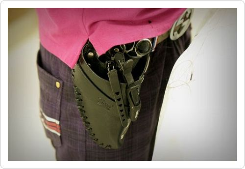

剪V发 @ Aug 12, 2009
原本打算修薄一些，结束后俨然政治工作者的发型，太离谱。 还是不出门的好，一出门悲剧就上演。每次弄头发就象买彩票，反正这次是没中奖，艰难的等待又将开始。以下均由Sherry拍摄，今天Maggie发短信说在德基看到Sherry从眼前飘过，我只想说点点点....因为周日我们才逛过德基。

看不清镜子中的自己，如果不戴眼镜的话。

夏季是美发店的淡季，秋冬客人多。其实修完后的发型很自然，但在美发师的劝诱下我还是做了柔化、电发+定型，不得不说他是一位出色的推销员，即使在淡季的时候。不喜欢这么整齐顺溜的发型，好象戴着一顶假发。有人建议用用蓬松粉，不晓得那是什么玩意儿~

南京能将头发剪得既动感又有活力的发型师并不多，重点是剪，不是做头发。技术不好不要紧，范儿是一定要摆的。

尝试过美发店购买的洗发水和护发素，每天顶着从理发店出来的气味儿并不爽，专业洗发产品去污力超强，洗完后头发很涩，不适合经常使用。

终于用完VIP卡里所有的数字，该是告别的时候了。

11 Responses to “剪V发”
2009-08-13
今天的发型搞得蛮好的，适合周末出一次郑重的远门儿。要不是晚上逛街太累，我也是去剪头发的，每次坐在那里好几个钟头需要一定体力的哟:-)
2009-08-13
美发店里的发型师很会诱导人消费的，在耳边不停的推荐做花样繁多的护理。我同事教我一招，介绍自己是做保险的，问发型师有没有兴趣买保险。呵呵。
2009-08-13
我很喜欢去美发店，但我很讨厌叫我买这个买那个，该买的我一定会买的，不喜欢被人逼。
2009-08-13
这次修得很好看呢，干净利落，呵呵：）
我很喜欢头发做柔化了以后轻飘飘，垂垂的感觉。
昨天看电视，看到小贝他老婆的头发，短发，前面很长，蛮漂亮的~好像在中国很少看到有人剪那个头发。
2009-08-13
我是固定了六年的造型师，偶尔也会尝试新造型，就算不中大奖最差也就是不中：）
2009-08-13
印象中我可有N年没光顾理发店了，我的头发一直都是老妈给剪的。想想自己还蛮怪僻的：头发和眉毛都不喜欢别人动它，喜欢自然的~~
2009-08-13
可以考虑换个留海试试看。
2009-08-13
我有个朋友在国外读书，舍不得到外面去剪头发，都是自己跟自己剪，听说没事的时候，就拿把剪刀这修修，那剪剪。
2009-08-13
哈哈，政治工作者？茶还挺幽默的说。
2009-08-14
好玩。政治工作者的反义词是性工作者吗？
2009-08-14
哈哈哈~~楼上的逻辑有意思，为什么不是市侩而是“性”？
Leave A Reply
存档只读，评论已关闭。